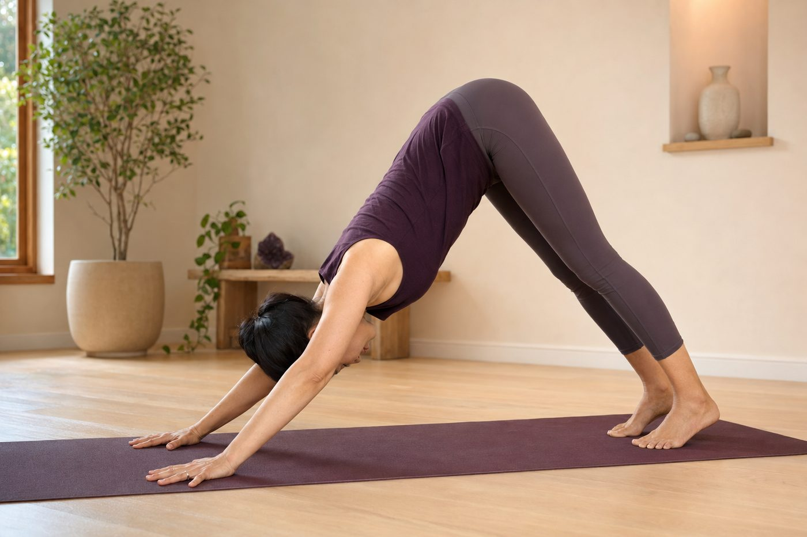

手腕、脖子、膝蓋：新手最常忽略的三個保護

剛開始練瑜伽，大家的眼睛多半盯著「動作漂不漂亮、拉得夠不夠深」，很少人注意到最容易默默受傷的三個地方——手腕、脖子、膝蓋。它們有個共通點：都是身體裡比較小、比較末端的關節，一旦旁邊的大肌群偷懶，它們就得替別人扛。這篇，就把這三個保護點一次講清楚。
為什麼受傷的，偏偏是這三個地方？
你有沒有發現，瑜伽練久了會喊痛的，很少是大腿或背部這種大塊肌肉，反而常常是手腕、脖子、膝蓋這種小地方？這不是巧合。
這三個關節有個共同身分：它們都是「末端的小關節」，本身不擅長承重、也不擅長旋轉。而它們旁邊，剛好各站著一個又大又有力、本來就該負責出力的大關節——手腕旁邊是肩膀，脖子下面是胸椎，膝蓋上面是髖關節。理想狀況下，出力與活動是大關節在做，小關節只負責銜接。問題是，當大關節太緊、或該出力時沒出力，那份工作不會憑空消失，它會往下丟給撐不住的小關節。手腕替肩膀扛、脖子替胸椎扛、膝蓋替髖扛——痛，就是這樣來的。
手腕、脖子、膝蓋會痛，常常不是它們的錯，是旁邊的大關節（肩膀、胸椎、髖）沒做好本分，把工作丟給了撐不住的小關節。
看懂這件事，下面三個保護原則就不只是死板的「規定」，而是有道理可循的。
手腕：別讓掌根一個人扛全身
下犬式、平板式，是新手手腕最常抗議的兩個動作。原因在於，這些姿勢裡手腕要背屈到接近九十度，還得撐住大半個身體的重量。如果你把重心整個壓在掌根（靠近手腕的那塊肉墊），力量就會直接擠壓腕隧道與裡面的正中神經，練沒幾下就痠、就麻。
真正的解法不是「少撐一點」，而是把壓力分散開來，並且把肩膀找回來一起幫忙：
- 十指完全張開，像手掌要抓住地板一樣，讓指腹和每根手指的根部都出力，特別是食指、拇指的根部要主動壓地。
- 想像重量從掌根往前送到整個手掌，而不是整個塌在手腕正下方。
- 肩膀主動往外、往下沉穩定——手腕會痠，很多時候其實是肩膀根本沒在撐。
- 真的不舒服，就用輔具：手腕下墊一條捲起的毛巾、用楔形磚墊高手掌，或改成握拳撐地、前臂著地，讓手腕回到中立、不必硬折。
脖子：頭不要自己亂跑，要跟著脊椎走
頸椎是整條脊椎裡最靈活的一段，代價就是它也最脆弱。最危險的兩個時機，一個是肩立這類把重量壓在肩頸上的倒立動作，另一個是後彎。
在肩立時，如果你好奇地轉頭去看旁邊，等於在頸椎已經承重的狀態下又硬加了一個扭轉，這是很容易出事的動作，務必記住：頭壓著的時候，絕對不要轉頭。而在後彎時，很多人習慣把頭直接往後一甩、讓它自由落體——這會讓後頸嚴重擠壓，上斜方肌和胸鎖乳突肌也跟著整片緊繃。
正確的觀念是：脖子是脊椎的延伸，它要跟著整條脊椎一起走，不該自己領頭、也不該亂擺。後彎時讓後頸保持長度、下巴微微收，把後仰的工作交給胸椎。說到這裡就有個關鍵洞見——後彎時脖子會痛，元凶常常不是脖子，而是胸椎太緊、打不開，脖子只好替它後仰。想從根本改善，先從有支撐的溫和後彎開始，會比硬折安全得多。
膝蓋：它是絞鏈，不是旋鈕
要保護膝蓋，得先認識它的設計。膝關節是一個「絞鏈關節」，就像門的鉸鏈，天生只擅長彎曲和伸直，並不適合旋轉。真正負責旋轉的，是上面那個球窩構造的髖關節。一旦搞混這兩者的分工，膝蓋就容易出事。
兩個新手最常踩的雷：
- 站姿（像戰士式）：膝蓋往內夾、沒有對齊腳尖，等於逼絞鏈去承受它不擅長的旋轉剪力，內側副韌帶和半月板首當其衝。原則是膝蓋方向永遠對準第二根腳趾，並且保持微彎，不要把膝蓋鎖死到過度伸展。
- 盤腿坐：髖還沒打開就硬把膝蓋往下壓，那股轉開的力量髖接不住，就全跑到膝蓋內側去了。正確做法是先讓髖鬆開——坐骨下方墊高，膝蓋下面用抱枕或毛毯支撐，讓膝蓋不必懸空硬撐。
所以，盤腿膝蓋痛、蹲下去膝蓋卡卡，問題的源頭常常不在膝蓋本身，而在卡住的髖關節。一直去拉膝蓋、硬壓膝蓋，往往越弄越糟。
與其一直提防受傷，不如先看清楚：你的力量到底漏在哪裡
現場做的 AI 體態檢測，會幫你看出肩膀、胸椎、髖有沒有在「該出力的地方偷懶」，你也就會知道，自己的手腕、脖子、膝蓋為什麼老是被迫替別人扛。
預約首次 NT$199 AI 體態檢測今天可以先記住的一件事
你不必把三個原則一次全背起來。真正要記住的只有一句話：當手腕、脖子、膝蓋開始抗議，先別急著怪它們，回頭看看旁邊的肩膀、胸椎、髖，有沒有在幫忙出力。把工作還給大關節，小關節自然就輕鬆了。
這也是壁繩很好用的地方——繩子和牆面能提供支撐與借力，在後彎時幫你撐住、讓胸椎慢慢打開，而不必用脖子硬凹；在需要出力的動作裡，讓你先在有保護的狀態下，練會怎麼把力量交給對的關節。這些調整都要循序漸進，不是一堂課就到位，但只要方向對了，身體會一次比一次舒服。
本頁為體態與姿勢的一般衛教與練習分享，非醫療診斷或治療。若有疼痛、舊傷或特殊病史，請先諮詢合格醫療專業人員。